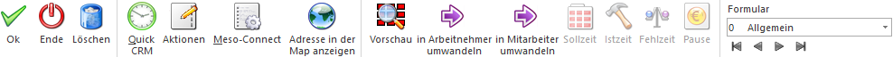
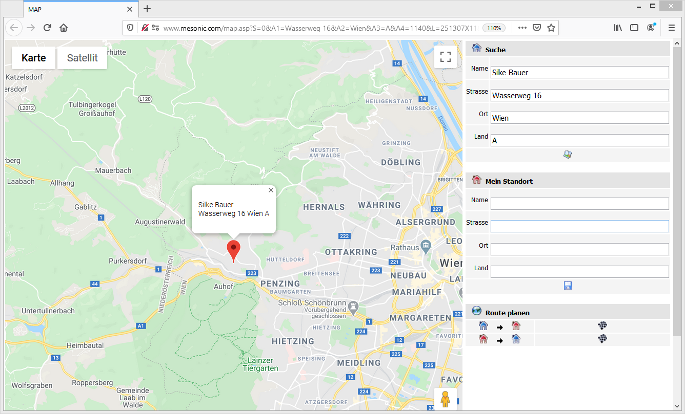

1 WinLine INFO
1 SMART
1 Mitarbeiterstamm
können Mitarbeiter und Bewerber unabhängig vom LOHN-Modul angelegt bzw. bearbeitet werden. Hierbei können auch Arbeitnehmer aus dem WinLine LOHN aufgerufen, aber nicht verändert werden.
Voraussetzung
Der Menüpunkt kann nur aufgerufen werden, wenn der Benutzer "Volladministrator" ist, die Berechtigung für das LOHN-Modul besitzt oder den Administratorentyp "Mitarbeiter" hinterlegt hat.
Beim Mitarbeiterstamm handelt es sich um einen reduzierten Arbeitnehmerstamm bzw. eine reduzierte Arbeitnehmerinfo in welchem Daten für die Mitarbeiter verwaltet werden können.
Wozu werden Mitarbeiterdaten benötigt?
Mitarbeiterdaten werden dann benötigt, wenn kein WinLine LOHN im Einsatz ist, trotzdem aber Aktionen auf Basis von Mitarbeitern durchgeführt werden sollen - z.B. die Zeiterfassung, Urlaubsanträge, udgm. und auch, um Auswertungen im WinLine SMART SCORE durchführen zu können. Wenn der WinLine LOHN im Einsatz ist, dann können Mitarbeiterdaten für die Mitarbeiter verwaltet werden, die nicht direkt im Unternehmen angestellt sind (Leiharbeiter), die trotzdem aber auch bei den oben erwähnten Aktionen erfasst werden sollen (um z.B. auch einen Überblick über die Leiharbeiter in Urlaub zu haben).
Technische Information
Datenbanktechnisch gesehen werden Mitarbeiter in den AN-Stamm-Tabellen des LOHN Österreich (V400) gespeichert, unabhängig davon, welches Länderkennzeichen im Mandanten hinterlegt ist. Somit kann der Mitarbeiterstamm länderunabhängig eingesetzt werden. Ist der LOHN Deutschland im Einsatz, wird der AN-Stamm von den deutschen AN-Stamm-Tabellen (V500) in die AN-Stamm-Tabellen des LOHN Österreich dupliziert.

Der Mitarbeiterstamm ist in mehrere Register unterteilt, welche in den nachfolgenden Kapiteln detailliert beschrieben werden:
ü Register "Zusatz / Benutzer"
ü Register "Arbeitszeitmodelle"
Buttons

Ø Ok
Mit Hilfe des Buttons "Ok" bzw. der Taste F5 werden die Änderungen bzw. Neuanlagen gespeichert, sofern es sich um einen Datensatz des Typs "Mitarbeiter" oder "Bewerber" handelt. "Arbeitnehmer" können hingegen nur dann gespeichert werden, wenn der Mandant als "nicht lohnführend" eingestellt ist (ansonsten ist der Button "Ok" ausgegraut).
Ø Ende
Durch Anwahl des Buttons "Ende" wird das Fenster geschlossen und alle nicht gespeicherten Eingaben verworfen.
Ø Löschen
Über den Button "Löschen" können "Mitarbeiter" oder "Bewerber" gelöscht werden. "Arbeitnehmer" können in diesem Fenster nur dann gelöscht werden, wenn es sich um einen "nicht lohnführenden" Mandanten handelt.
Ø Quick CRM
Wenn dieser Button angeklickt wird, kann ein CRM-Fall zu dem gerade aufgerufenen Mitarbeiter erfasst werden. Voraussetzung dafür ist:
ü Es muss eine gültige CRM-Lizenz vorhanden sein.
ü Der Benutzer muss ein CRM-Benutzer sein.
ü Es müssen entsprechende CRM-Aktionen bzw. CRM-Workflows mit der Kennzeichnung "QUICK CRM" angelegt sein.
Hinweis
Es werden im WinLine Standard 9 CRM-Aktionen (CRM-Gruppe "100") mitgeliefert.
Ø Aktionen
Durch Anwahl dieses Buttons kann mit Hilfe eines Kontextmenüs eine Aktion für den selektierten Datensatz durchgeführt werden. Folgende Aktionen stehen zur Verfügung:
ü eMail senden
Der selektierte Datensatz
wird in Form einer temporäre Kampagne an das Postausgangsbuch (Versandart
"E-Mail") zum Erstellen und Versenden der E-Mails übergeben.
ü Brief schreiben
Es wird das
Postausgangsbuch geöffnet, in dem für die selektierten Datensätze ein
Serienbrief ausgegeben werden kann.
ü Telefon anrufen
Wird diese Aktion
gewählt und ist beim entsprechenden Datensatz auch eine Telefonnummer
eingetragen, wird - sofern die entsprechenden Voraussetzungen vorhanden sind -
die Telefonnummer gewählt.
ü Mobiltelefon anrufen
Wird diese Aktion
gewählt und ist beim entsprechenden Datensatz auch eine Mobiltelefonnummer
eingetragen, wird - sofern die entsprechenden Voraussetzungen vorhanden sind -
die Mobiltelefonnummer gewählt.
Ø Meso-Connect
Durch Anklicken des Buttons "Meso-Connect" wird ein Kontextmenü geöffnet, in dem standardmäßig folgende "Meso-Connect"-Aktionen zur Verfügung stehen:
ü Mail
An den selektierten Datensatz kann
mit dieser Aktion ein Mail geschickt werden. Es öffnet sich dazu das
Meso-Connect-Mail Fenster indem die Betreffzeile des Mails sowie ein Text
angegeben werden kann. Weiters besteht noch die Möglichkeit, ein Attachment
anzuhängen. Voraussetzung ist, dass bei den gewählten Datensätzen auch eine
Mail-Adresse vorhanden ist.
ü Kontakt
Mit dieser Aktion kann ein
Abgleich mit den Outlook-Kontakten durchgeführt werden, wobei es 4
unterschiedliche Szenarien geben kann:
ü 1. Der Datensatz ist in Outlook noch nicht vorhanden. In diesem Fall wird der Kontakt neu angelegt.
ü 2. Der Datensatz ist in Outlook bereits vorhanden, in der WinLine wurde eine Änderung durchgeführt. In diesem Fall werden die veränderten Daten an Outlook übergeben.
ü 3. Der Datensatz ist in Outlook bereits vorhanden und wurde dort auch verändert. In diesem Fall werden die veränderten Daten in die WinLine übernommen.
ü 4. Der Datensatz ist in Outlook und in der WinLine bereits vorhanden und wurde auch in beiden bereits verändert. In diesem Fall erfolgt eine Frage, welche der Daten aktualisiert werden sollen.
ü  Excel
Excel
Damit wird das Programm Microsoft
Excel gestartet und der selektierte Datensatz wird mit den Spaltenüberschriften
übergeben.
ü  Word
Word
Hier wird eine Word-Vorlage
aufgerufen, in die die Daten des Kontaktes übergeben werden.
ü  StarCalc
StarCalc
Sofern das Programm StarCalc
installiert ist, können die Daten in dieses Programm übergeben werden.
ü  StarWrite
StarWrite
Sofern das Programm StarWrite
installiert ist, können die Daten in dieses Programm übergeben werden.
ü  Wizard
Wizard
Über diesen Eintrag kann der
Meso-Connect Wizard aufgerufen werden, mit dem neue Aktionen erstellt bzw.
bestehende Aktionen verändert werden können.
Ø Adresse in der Map anzeigen
Wenn dieser Button angeklickt wird, wird - sofern eine Internetverbindung vorhanden ist - eine Internetseite geöffnet, in welcher der Standort der gewählten Adresse angezeigt wird.

Ø Vorschau
Durch Anwahl des Buttons "Vorschau" kann die Vorschau für Archiveinträge (siehe Register Digitale Akte) aktiviert werden.
Hinweis
Die zuletzt gewählte Einstellung wird benutzerspezifisch gespeichert.
Ø in Arbeitnehmer umwandeln
Wenn es sich bei dem aufgerufenen Datensatz um einen Mitarbeiter oder um einen Bewerber handelt, so kann dieser mit Hilfe dieses Buttons in einen Arbeitnehmer umgewandelt werden. Damit besteht in weiterer Folge die Möglichkeit, den Arbeitnehmer in WinLine LOHN entsprechend zu bearbeiten.
Hinweis
Diese Funktion wird nur unterstützt, wenn es sich um einen Mandanten mit österreichischen LOHN handelt.
in Mitarbeiter umwandeln
Wenn es sich bei dem aufgerufenen Datensatz um einen Bewerber handelt, so kann dieser mit Hilfe dieses Buttons in einen Mitarbeiter umgewandelt werden, wodurch dann alle Funktionalitäten für einen Mitarbeiter zur Verfügung stehen.
Ø Sollzeit / Istzeit / Fehlzeit / Pause (nur im Register "Zeitenerfassung" anwählbar)
Mit Hilfe dieser Buttons kann definiert werden, welche Zeiten innerhalb des Registers Zeitenerfassung dargestellt werden sollen. Es handelt sich dabei um "Umschaltbuttons", die entweder "eingeschalten" (gedrückt) oder "ausgeschalten" (nicht gedrückt) sind. Der letzte Zustand des Buttons wird benutzerspezifisch gespeichert und beim nächsten Öffnen des Fensters entsprechend wieder vorgeschlagen.
ü Sollzeit
Mit diesem Button kann
gesteuert werden, ob die Sollzeiten in der Auswertung mit angezeigt werden
sollen oder nicht.
ü Istzeit
Mit diesem Button kann
gesteuert werden, ob die Istzeiten in der Auswertung mit angezeigt werden sollen
oder nicht.
ü Fehlzeit
Mit diesem Button kann
gesteuert werden, ob die Fehlzeiten in der Auswertung mit angezeigt werden
sollen oder nicht.
ü Pause
Mit diesem Button kann
gesteuert werden, ob die Pausen in der Auswertung mit angezeigt werden sollen
oder nicht.
Ø Formular
Über die Auswahlbox "Formular" kann gewählt werden, in welcher Form der Stammdatensatz bearbeitet werden soll. Wenn die Option "0 - Allgemein" gewählt wird, dann wird wieder in die "Normalansicht" mit allen Eingabefeldern zurückgeschalten.
Hinweis
Die Definition der Formulare für die individuelle Gestaltung erfolgt im Programm WinLine START über den Menüpunkt "Vorlagen - Vorlagen Anlage - Individuelle Formulare".
Ø VCR-Buttons
Über die so genannten VCR-Buttons, welche in jedem Register zur Verfügung stehen, kann durch Mausklick zwischen den Datensätzen geblättert werden.
ü  Damit kann
der erste Datensatz angesprochen werden.
Damit kann
der erste Datensatz angesprochen werden.
ü  Damit kann
der vorherige Datensatz angesprochen werden
Damit kann
der vorherige Datensatz angesprochen werden
ü  Damit kann
der nächste Datensatz angesprochen werden.
Damit kann
der nächste Datensatz angesprochen werden.
ü  Damit kann
der letzte Datensatz angesprochen werden.
Damit kann
der letzte Datensatz angesprochen werden.